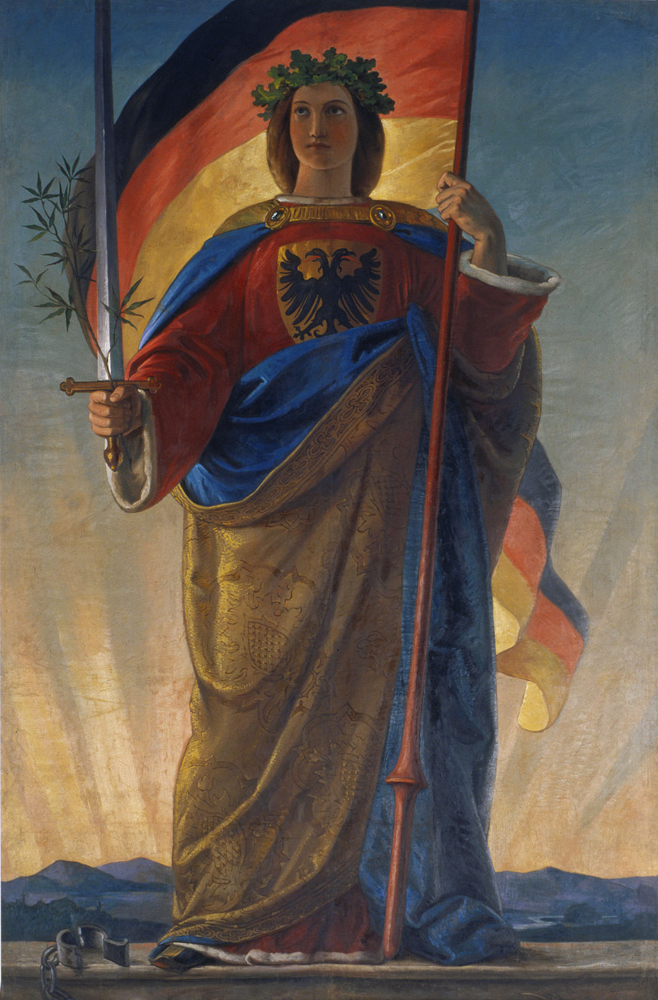
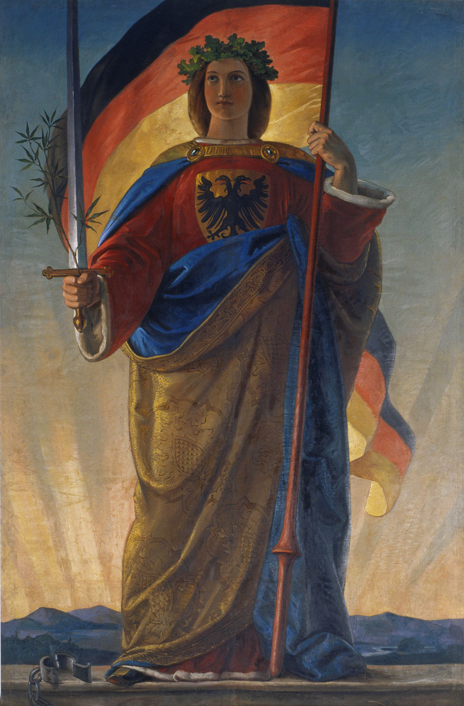
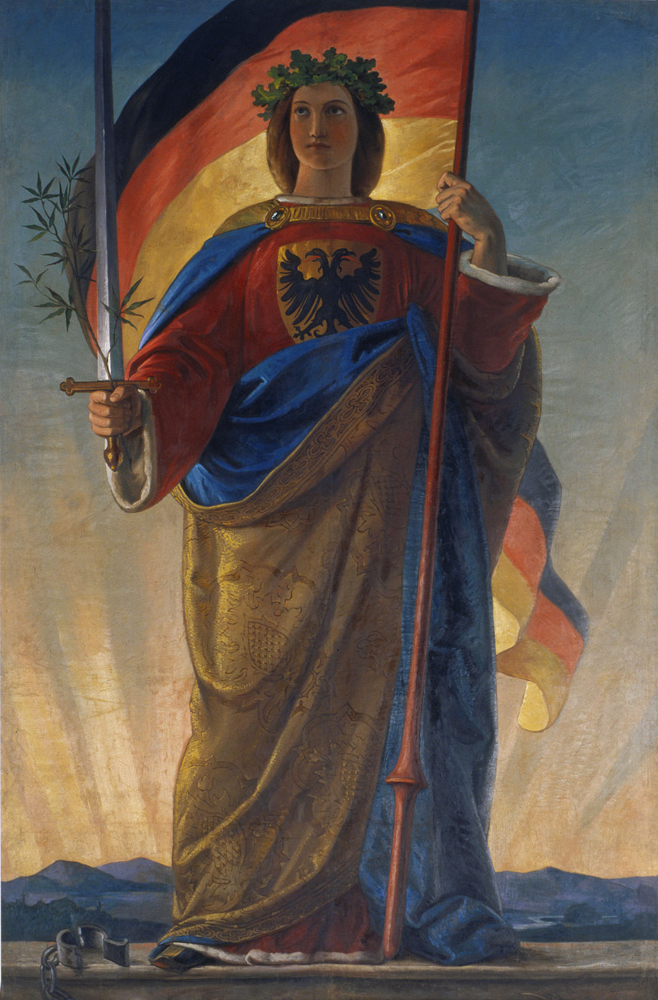

College, as it turned out, was a good time to have an identity crisis. Everyone around me was learning more about some aspect of their identity
Some people were coming out of closets or questioning their gender identity. Some started to question their faith. For many others it was a realization of their disadvantages/privilege due to socio-political structures based on race, class and (for my friends back home) caste
I had questions of my own
The Republic of India is a state that was formed in 1947, however the Indian civilization itself traces its root back to 3300—1300 BCE. Through out the ages, the Indian subcontinent has seen rise and fall of many empires. South Asia as it exists today is an extremely diverse subcontinent with many ethnicities, languages and religions.
As I learned more about this remarkable nation I started questioning what it meant for something to be called Indian. In the face of such mind-boggling diversity, the mathematical idea of an ‘average Indian’ breaks down. It was imperative for me to somehow visualize the feeling of being Indian.
But here's the problem: How does one visualize the abstract idea of a nation in a way that articulates its values and aspirations?

It turns out that artists have been doing this for a while now. The images you see above are National Personifications of the nations they represent.
From top to bottom, left to right: Italia, the national personification of Italy. Hevetia for Switzerland. Handala for Palestine. Marianne for France. Uncle Sam and Britannia for the United States and Britain respectively. Germania for Germany. Mother Russia for Russia. Mother Norway for Norway. Srulik for Israel.
Each personification says something about the nation that it represents. Francisco Hayez's painting “Meditation on the History of Italy” was painted after a failed uprising. Italia's eyes, in the painting, reflect that disappointment. Similarly Handala the boy from Palestine, hands clasped at his back, represents the defiance of the Palestian people.
And this is one of the first known visualizations of India.
Painted by Abhinandranath Tagore, “Bharat Mata” or Mother India is an ascetic who wears Saffron-colored robes—A color of renunciation. She holds objects that represent the bare necessities of life: Clothing, Knowledge, Food and Spirtuality.
Sanitation conditionsSource of LightingMaterial of Floor in householdsMaterial of Roof in householdsSource of Drinking WaterMisc Assets
As beautiful and moving that portrait is for me, I wondered if I could make a modern portrait of the woman called India using data and code.
There are many datasets out there that reflect demographic diversity in India but I disregarded them on purpose. I wished to explore another aspect of diversity thats not as often talked about—The diversity in living conditions.
By choosing the datasets listed above (Census of India 2011), I hoped to visualize the diversity in the day-to-day experience of millions in India.
Sanitation Conditions
Total
Urban
Rural
Sanitation facilities present within the Household
Flush/Pour latrine connected to Piped Sewer system


 
